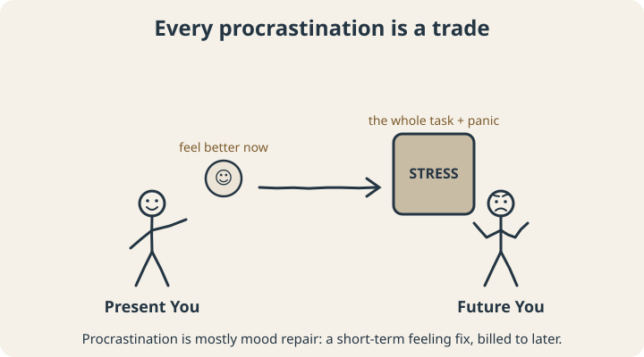
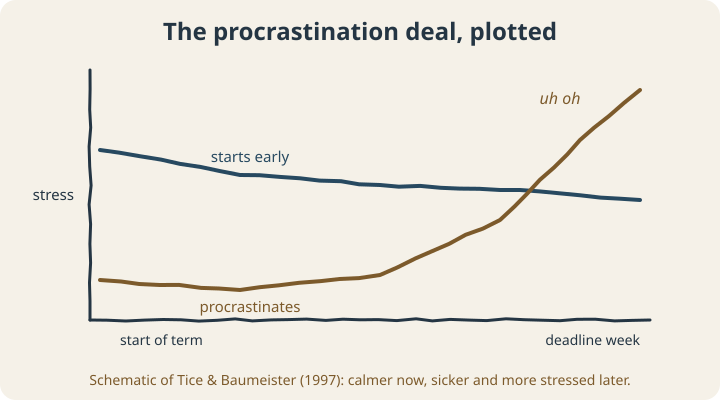

September 22, 2026
Why Do I Procrastinate? It’s Not a Time Problem. It’s a Feelings Problem.

Let’s start with a confession that almost everyone can make: at some point, you have avoided a task so thoroughly that avoiding it became more work than the task itself.
You cleaned the entire kitchen to avoid a ten-minute phone call. You researched “best productivity apps” for an hour instead of writing the first paragraph. You watched a video essay about the history of staplers. (It was, in fairness, a good video.)
And afterward you asked yourself the question that brought you here: why do I procrastinate?
The usual answers are “you’re lazy” or “you’re bad at managing time.” The research says both are mostly wrong. Procrastination isn’t a time-management problem. It’s an emotion-management problem wearing a time-management costume.
The trade you keep making
Here’s the core idea, from procrastination researchers Fuschia Sirois and Tim Pychyl. When you procrastinate, you aren’t choosing leisure over work. You’re choosing to feel better right now — and quietly sending the bill to a future version of yourself.1

They call this the “priority of short-term mood repair.” The task makes you feel something unpleasant — boredom, anxiety, confusion, self-doubt, dread — and avoiding it makes that feeling go away. Instantly. Reliably. Which is exactly the kind of reward brains love to repeat.
The cruel twist is that Future You feels like a stranger. It’s much easier to hand a problem to a stranger than to yourself.
Which tasks get procrastinated?
Not all tasks are equal. In 2007, psychologist Piers Steel pooled 691 correlations from procrastination research into one enormous meta-analysis. Some of the strongest and most consistent predictors of procrastination were about the task, not the person: how unpleasant the task felt (task aversiveness) and how far away its payoff was.2
Earlier work by Blunt and Pychyl got more specific about what makes a task aversive. Out of 30 possible task qualities they measured, three stood out: tasks that felt boring, frustrating, or that people resented having to do.3
This is genuinely useful, because it means you can predict your own procrastination. Look at your to-do list and ask of each item: Is it boring? Frustrating? Do I resent it? Is it confusing? Is the reward weeks away? The items with the most yeses are the ones you’ll avoid, regardless of how important they are.
“But I work better under pressure”
Maybe! But there’s a famous study you should know about before you bet your semester on it.
In 1997, Dianne Tice and Roy Baumeister followed college students through a term. Early on, the procrastinators were actually doing great: less stressed and less sick than the students who started early. The plan was working!

Then the deadlines arrived. Late in the term, procrastinators reported more stress and more illness, were sicker overall, and got lower grades on their assignments.4 The early calm wasn’t free. It was borrowed, with interest.
(For people with ADHD, “I work better under pressure” often is partly true: urgency can supply the activation energy that important-but-boring tasks lack. We dug into that in our post on ADHD paralysis. But “pressure is the only thing that works” is a signal to build other sources of fuel, not proof the system is fine.)
Why “just do it” doesn’t work
If procrastination is about avoiding a bad feeling, then shaming yourself makes it worse. Guilt is another bad feeling attached to the task, which makes the task more aversive, which makes you more likely to avoid it. It’s a loop, and willpower lectures just add fuel.
The fix is to work on the feeling and the task, not your character.
What actually helps
1. Name the feeling, not the task
Instead of “I need to do my taxes,” try “I’m avoiding my taxes because I feel stupid about the forms.” Now you know the real problem: confusion. And confusion has solutions (a guide, a friend, an accountant) that willpower doesn’t.
2. Make the task less aversive
Go down the list of aversive features and chip away at them. Boring? Add music, a nicer location, or a friend. Frustrating or confusing? Spend five minutes just writing down what you don’t know. Resented? Write one sentence about what it gets you, not what it gets whoever assigned it. Reward far away? Add a small one right now.
3. Shrink the start
The bad feeling is usually loudest right before you begin, and fades once you’re moving. So make beginning tiny: “open the document and write one bad sentence.” You are allowed to stop there. You usually won’t.
4. Decide when, where, and how in advance
“After lunch on Tuesday, at the kitchen table, I’ll open the tax folder.” This kind of if-then plan is one of the best-supported strategies in behavior-change research: across 94 tests, it had a medium-to-large effect on reaching goals.5 It works because you’ve already made the decision before the bad feeling shows up.
5. Be kind to Future You by being kind to Present You
It sounds soft, but it’s been tested. In a 2010 study, students who forgave themselves for procrastinating on studying for their first exam procrastinated less on the next one.6 Letting go of the guilt removes some of the dread attached to the task. Forgive the last delay. Start the next small step.
The bottom line
You don’t procrastinate because you’re lazy or because you can’t read a calendar. You procrastinate because some tasks make you feel bad, and avoiding them makes you feel better, fast. Once you see that trade clearly, you can start changing the terms: make tasks less aversive, make starts smaller, decide in advance, and stop making Future You pay for Present You’s comfort.
Different brains get unstuck in different ways. Our free Brain Mode Quiz helps you find the kinds of support that work for you — whether your brain engages best when it can see it, map it, move, talk it through, or chase something new.
Scope note: This article is educational. If avoidance is tied to persistent anxiety, low mood, or is seriously affecting your life, please talk to a mental health professional. Coaching isn’t a substitute for that care.
Sources
- Sirois, F., & Pychyl, T. (2013). Procrastination and the priority of short-term mood regulation: Consequences for future self. Social and Personality Psychology Compass, 7(2), 115–127. doi.org/10.1111/spc3.12011
- Steel, P. (2007). The nature of procrastination: A meta-analytic and theoretical review of quintessential self-regulatory failure. Psychological Bulletin, 133(1), 65–94. doi.org/10.1037/0033-2909.133.1.65
- Blunt, A. K., & Pychyl, T. A. (2000). Task aversiveness and procrastination: A multi-dimensional approach to task aversiveness across stages of personal projects. Personality and Individual Differences, 28(1), 153–167. doi.org/10.1016/S0191-8869(99)00091-4
- Tice, D. M., & Baumeister, R. F. (1997). Longitudinal study of procrastination, performance, stress, and health: The costs and benefits of dawdling. Psychological Science, 8(6), 454–458. doi.org/10.1111/j.1467-9280.1997.tb00460.x
- Gollwitzer, P. M., & Sheeran, P. (2006). Implementation intentions and goal achievement: A meta-analysis of effects and processes. Advances in Experimental Social Psychology, 38, 69–119. doi.org/10.1016/S0065-2601(06)38002-1
- Wohl, M. J. A., Pychyl, T. A., & Bennett, S. H. (2010). I forgive myself, now I can study: How self-forgiveness for procrastinating can reduce future procrastination. Personality and Individual Differences, 48(7), 803–808. doi.org/10.1016/j.paid.2010.01.029